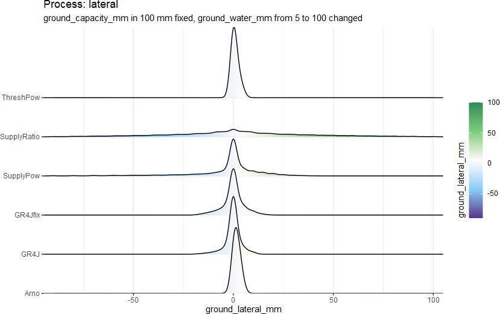

lateral flux
lateral.RdIn hydrological modeling, lateral flow refers to the process by which water flows horizontally through the soil or aquifer, rather than vertically. It is typically represented by a loss term in the water balance equation, so it also named as groundwater exchange (e.g. GR4J (Perrin et al. 2003) ). The flux of lateral exchange is always calculated (only) by the water in the ground layer \(W_{grnd}\). Unlike other fluxes, the lateral exchange can be positive or negative, with positive indicating a supply from other regions and negative indicating distribution to other regions.
This process is so flexible that we must carefully use it, because it can easily destroy the waster balance in the research catchment.
\[F_{ltrl} = f_{lateral}(D_{grnd})\]
to:
\[F_{ltrl} = f_{lateral}(W_{grnd}, C_{grnd}, ...)\]
where
\(W_{grnd}\) is
ground_water_mm\(C_{grnd}\) is
ground_capacity_mm, but not all the methods need the \(C_{grnd}\)
The output density distribution from 6 methods:

Usage
lateral_SupplyPow(
ground_water_mm,
ground_capacity_mm,
param_lateral_sup_k,
param_lateral_sup_gamma
)
lateral_SupplyRatio(ground_water_mm, param_lateral_sur_k)
lateral_GR4J(ground_water_mm, ground_capacity_mm, ground_potentialLateral_mm)
lateral_GR4Jfix(
ground_water_mm,
ground_capacity_mm,
ground_potentialLateral_mm,
param_lateral_grf_gamma
)
lateral_ThreshPow(
ground_water_mm,
ground_capacity_mm,
ground_potentialLateral_mm,
param_lateral_thp_thresh,
param_lateral_thp_gamma
)
lateral_Arno(
ground_water_mm,
ground_capacity_mm,
ground_potentialLateral_mm,
param_lateral_arn_thresh,
param_lateral_arn_k
)Arguments
- ground_water_mm
(mm/m2/TS) water volume in
groundLy- ground_capacity_mm
(mm/m2) water storage capacity in
groundLy- param_lateral_sup_k
<-1, 1> coefficient parameter for
lateral_SupplyPow()- param_lateral_sup_gamma
<0.01, 5> parameters for
lateral_SupplyPow()- param_lateral_sur_k
<-2, 1> coefficient parameter for
lateral_SupplyRatio()- ground_potentialLateral_mm
<-7, 7> (mm/m2/TS) potential lateral flow
- param_lateral_grf_gamma
<0.01, 5> parameter for
lateral_GR4Jfix()- param_lateral_thp_thresh
<0.1, 0.9> coefficient parameter for
lateral_ThreshPow()- param_lateral_thp_gamma
<0.1, 5> exponential parameter for
lateral_ThreshPow()- param_lateral_arn_thresh
<0.1, 0.9> coefficient parameter for
lateral_ThreshPow()- param_lateral_arn_k
<0.1, 1> exponential parameter for
lateral_ThreshPow()
_SupplyPow:

\[F_{ltrl} = k \left( \frac{W_{grnd}}{C_{grnd}} \right)^\gamma W_{grnd}\] where
\(k\) is
param_lateral_sup_k\(\gamma\) is
param_lateral_sup_gamma

_GR4J (Perrin et al. 2003) :

\[F_{ltrl} = M_{ltrl} \left( \frac{W_{grnd}}{C_{grnd}} \right)^{7/2} \] where
\(M_{ltrl}\) is
ground_potentialLateral_mm
_GR4Jfix (Perrin et al. 2003)

based on _GR4J use a new parameter to replace the numer 4:
\[F_{ltrl} = M_{ltrl} \left( \frac{W_{grnd}}{C_{grnd}} \right)^\gamma \]
where
\(\gamma\) is
param_lateral_grf_gamma
_ThreshPow

based on the _GR4Jfix and add the one threshold \(\phi_b\):
\[F_{ltrl} = 0, \quad \frac{W_{grnd}}{C_{grnd}} < \phi_b\]
\[F_{ltrl} = M_{ltrl} \left(\frac{\frac{W_{grnd}}{C_{grnd}} - \phi_b}{1-\phi_b} \right)^\gamma, \quad \frac{W_{grnd}}{C_{grnd}} \geq \phi_b\]
where
\(\phi_b\) is
param_lateral_thp_thresh\(\gamma\) is
param_lateral_thp_gamma
_Arno (Franchini and Pacciani 1991; Liang et al. 1994)

has also in two cases divided by a threshold water content \(\phi_b\): \[F_{ltrl} = k M_{ltrl} \frac{W_{grnd}}{C_{grnd}}, \quad \frac{W_{grnd}}{C_{grnd}} < \phi_b\] \[F_{ltrl} = k M_{ltrl} \frac{W_{grnd}}{C_{grnd}} + (1-k) M_{ltrl} \left(\frac{W_{grnd} - W_s}{C_{grnd} - W_s} \right)^2, \quad \frac{W_{grnd}}{C_{grnd}} \geq \phi_b\] \[W_s = k C_{grnd}\] where
\(\phi_b\) is
param_lateral_arn_thresh\(k\) is
param_lateral_arn_k
References
Franchini M, Pacciani M (1991).
“Comparative Analysis of Several Conceptual Rainfall-Runoff Models.”
Journal of Hydrology, 122(1), 161--219.
ISSN 0022-1694, doi: 10.1016/0022-1694(91)90178-K
.
Liang X, Lettenmaier D, Wood E, Burges S (1994).
“A Simple Hydrologically Based Model of Land Surface Water and Energy Fluxes for GSMs.”
J. Geophys. Res., 99.
doi: 10.1029/94JD00483
.
Perrin C, Michel C, Andr攼㸹assian V (2003).
“Improvement of a Parsimonious Model for Streamflow Simulation.”
Journal of Hydrology, 279(1-4), 275--289.
ISSN 00221694, doi: 10.1016/S0022-1694(03)00225-7
.